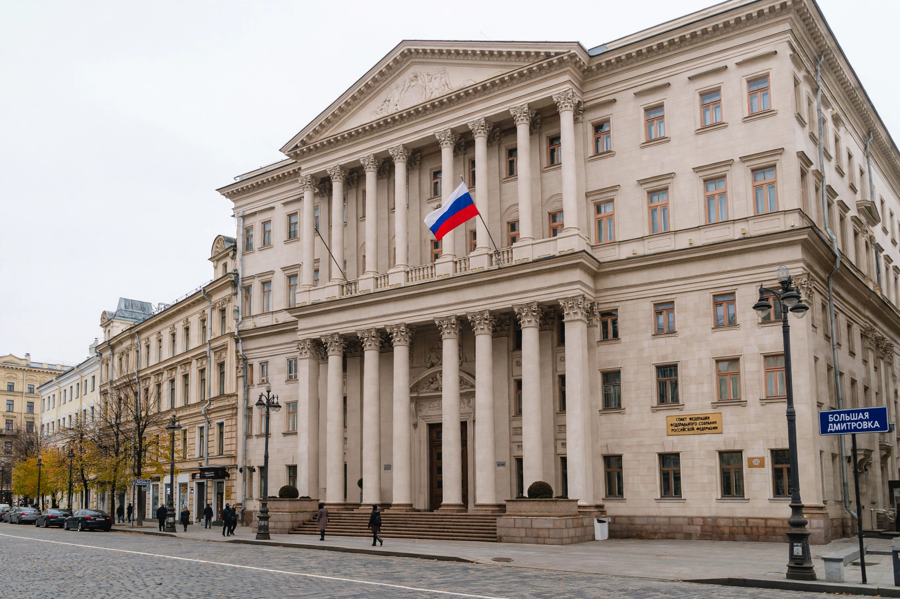

| Federation Council Совет Федерации | |
| Type | Upper house of the Federal Assembly |
|---|---|
| Chair | Valentina Matviyenko (since 2011) |
| Seats | 178 (two per federal subject, plus presidential appointees) |
| Meeting place | 26 Bolshaya Dmitrovka Street, Moscow |
The Federation Council (Russian: Совет Федерации, Sovet Federatsii) is the upper house of the Federal Assembly, the parliament of the Russian Federation. Each of Russia's federal subjects sends two members ("senators"): one chosen by the subject's legislative body and one appointed by its executive. Federal subjects include republics, krais, oblasts, federal cities, an autonomous oblast, and autonomous okrugs.
With 89 federal subjects claimed by Russia, the subject delegations number 178; the constitutional amendments of 2020 additionally allow the President to appoint up to 30 further members, of whom no more than seven may be appointed for life, and former presidents may also sit for life. Members are not elected directly; their terms follow the terms of the regional bodies that select them. Until 2000, regional governors and legislative chairs sat in the Council ex officio; reforms under President Vladimir Putin replaced them with full-time representatives.
Under Article 102 of the Constitution, the Federation Council approves changes to borders between federal subjects, presidential decrees introducing martial law or a state of emergency, and decisions on the possibility of using the Russian armed forces outside the country. It appoints the judges of the Constitutional Court and the Supreme Court, appoints and dismisses the Prosecutor General on the President's proposal, and formally decides on the removal of the President from office following impeachment charges brought by the State Duma. Federal laws adopted by the Duma on the budget, taxes, financial and customs regulation, and ratification of treaties require the Council's consideration.
The Council is chaired by a Chairperson elected from among its members; the Chair is third in the constitutional order of precedence, after the President and Prime Minister, and would be involved in succession procedures. Valentina Matviyenko, formerly governor of Saint Petersburg, has chaired the chamber since September 2011.